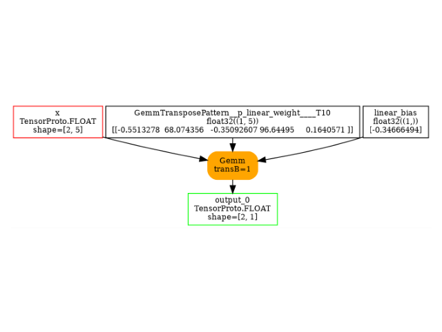

Note
Go to the end to download the full example code.
101: Linear Regression and export to ONNX
scikit-learn and torch to train a linear regression.
data
import numpy as np
from sklearn.datasets import make_regression
from sklearn.linear_model import LinearRegression, SGDRegressor
from sklearn.metrics import mean_squared_error, r2_score
from sklearn.model_selection import train_test_split
import torch
from onnxruntime import InferenceSession
from experimental_experiment.helpers import pretty_onnx
from onnx_array_api.plotting.graphviz_helper import plot_dot
from experimental_experiment.torch_interpreter import to_onnx
X, y = make_regression(1000, n_features=5, noise=10.0, n_informative=2)
print(X.shape, y.shape)
X_train, X_test, y_train, y_test = train_test_split(X, y)
(1000, 5) (1000,)
scikit-learn: the simple regression
clr = LinearRegression()
clr.fit(X_train, y_train)
print(f"coefficients: {clr.coef_}, {clr.intercept_}")
coefficients: [ 0.25568852 50.73490557 -0.10004704 20.15625117 -0.29502398], -0.11343410350248861
Evaluation
LinearRegression: l2=95.37990131827623, r2=0.9684781106469805
scikit-learn: SGD algorithm
SGD = Stochastic Gradient Descent
clr = SGDRegressor(max_iter=5, verbose=1)
clr.fit(X_train, y_train)
print(f"coefficients: {clr.coef_}, {clr.intercept_}")
-- Epoch 1
Norm: 45.88, NNZs: 5, Bias: -0.724294, T: 750, Avg. loss: 350.873631
Total training time: 0.00 seconds.
-- Epoch 2
Norm: 52.30, NNZs: 5, Bias: -0.433483, T: 1500, Avg. loss: 61.934459
Total training time: 0.00 seconds.
-- Epoch 3
Norm: 53.82, NNZs: 5, Bias: -0.459643, T: 2250, Avg. loss: 49.829481
Total training time: 0.00 seconds.
-- Epoch 4
Norm: 54.35, NNZs: 5, Bias: -0.452309, T: 3000, Avg. loss: 48.897180
Total training time: 0.00 seconds.
-- Epoch 5
Norm: 54.55, NNZs: 5, Bias: -0.311528, T: 3750, Avg. loss: 48.766186
Total training time: 0.00 seconds.
/home/xadupre/vv/this/lib/python3.10/site-packages/sklearn/linear_model/_stochastic_gradient.py:1616: ConvergenceWarning: Maximum number of iteration reached before convergence. Consider increasing max_iter to improve the fit.
warnings.warn(
coefficients: [ 0.23142638 50.72150015 -0.16023538 20.06583581 -0.18043176], [-0.31152813]
Evaluation
SGDRegressor: sl2=96.14988344829608, sr2=0.9682236409822941
torch
class TorchLinearRegression(torch.nn.Module):
def __init__(self, n_dims: int, n_targets: int):
super().__init__()
self.linear = torch.nn.Linear(n_dims, n_targets)
def forward(self, x):
return self.linear(x)
def train_loop(dataloader, model, loss_fn, optimizer):
total_loss = 0.0
# Set the model to training mode - important for batch normalization and dropout layers
# Unnecessary in this situation but added for best practices
model.train()
for X, y in dataloader:
# Compute prediction and loss
pred = model(X)
loss = loss_fn(pred.ravel(), y)
# Backpropagation
loss.backward()
optimizer.step()
optimizer.zero_grad()
# training loss
total_loss += loss
return total_loss
model = TorchLinearRegression(X_train.shape[1], 1)
optimizer = torch.optim.SGD(model.parameters(), lr=1e-3)
loss_fn = torch.nn.MSELoss()
device = "cpu"
model = model.to(device)
dataset = torch.utils.data.TensorDataset(
torch.Tensor(X_train).to(device), torch.Tensor(y_train).to(device)
)
dataloader = torch.utils.data.DataLoader(dataset, batch_size=1)
for i in range(5):
loss = train_loop(dataloader, model, loss_fn, optimizer)
print(f"iteration {i}, loss={loss}")
iteration 0, loss=777174.8125
iteration 1, loss=111117.1953125
iteration 2, loss=75595.0390625
iteration 3, loss=73556.3046875
iteration 4, loss=73427.328125
Lets check the error
TorchLinearRegression: tl2=95.12680583561773, tr2=0.9685617556045643
And the coefficients.
print("coefficients:")
for p in model.parameters():
print(p)
coefficients:
Parameter containing:
tensor([[ 0.1938, 50.6865, -0.0816, 20.1749, -0.3115]], requires_grad=True)
Parameter containing:
tensor([-0.0207], requires_grad=True)
Conversion to ONNX
Lets convert it to ONNX.
onx = to_onnx(model, (torch.Tensor(X_test[:2]),), input_names=["x"])
Lets check it is work.
sess = InferenceSession(onx.SerializeToString(), providers=["CPUExecutionProvider"])
res = sess.run(None, {"x": X_test.astype(np.float32)[:2]})
print(res)
[array([[-13.667697],
[ -6.557118]], dtype=float32)]
And the model.
<Axes: >
With dynamic shapes
onx = to_onnx(
model,
(torch.Tensor(X_test[:2]),),
input_names=["x"],
dynamic_shapes={"x": {0: torch.export.Dim("batch")}},
)
print(pretty_onnx(onx))
opset: domain='' version=18
doc_string: large_model=False, inline=False, external_threshold=1024
function_options=FunctionOptions()
optimized:OptimizationOptions(remove_unused=True, remove_identity=True,
constant_folding=False, constant_size=1024, constant_fusing=True, verbose=0,
max_iter=-1, recursive=False, processor=CPU, order=None,
patterns=['BatchNormalizationPattern', 'BatchNormalizationTrainingPattern',
'CastLayerNormalizationCastPattern', 'CastPattern', 'CastCastBinaryPattern',
'CastOpCastPattern', 'ComputationCastOpCastPattern', 'ConvBiasNullPattern',
'DropoutPattern', 'ExpandPattern', 'ExpandBroadcastPattern',
'ExpandSwapPattern', 'GeluPattern', 'IdentityPattern',
'LayerNormalizationPattern', 'LayerNormalizationScalePattern',
'LeakyReluPattern', 'MulMulMulScalarPattern', 'ReduceReshapePattern',
'ReduceSumNormalizePattern', 'ReshapePattern',
'ReshapeMatMulReshapePattern', 'Reshape2Of3Pattern',
'ReshapeReshapeBinaryPattern', 'MatMulReshape2Of3Pattern',
'MulMulMatMulPattern', 'ReshapeReshapePattern', 'RotaryConcatPartPattern',
'SameChildrenPattern', 'SlicesSplitPattern',
'SoftmaxCrossEntropyLossCastPattern', 'Sub1MulPattern',
'SwitchOrderBinaryPattern', 'TransposeMatMulPattern',
'TransposeReshapeMatMulPattern', 'TransposeReshapeTransposePattern',
'TransposeTransposePattern', 'UnsqueezeEqualPattern',
'UnsqueezeUnsqueezePattern'])
input: name='x' type=dtype('float32') shape=['batch', 5]
init: name='p_linear_weight' type=dtype('float32') shape=(1, 5)
init: name='p_linear_bias' type=dtype('float32') shape=(1,) -- array([-0.02071281], dtype=float32)
Gemm(x, p_linear_weight, transA=0, transB=1) -> _onx_matmul0
Add(_onx_matmul0, p_linear_bias) -> output_0
output: name='output_0' type=dtype('float32') shape=['batch', 1]
Total running time of the script: (0 minutes 2.576 seconds)